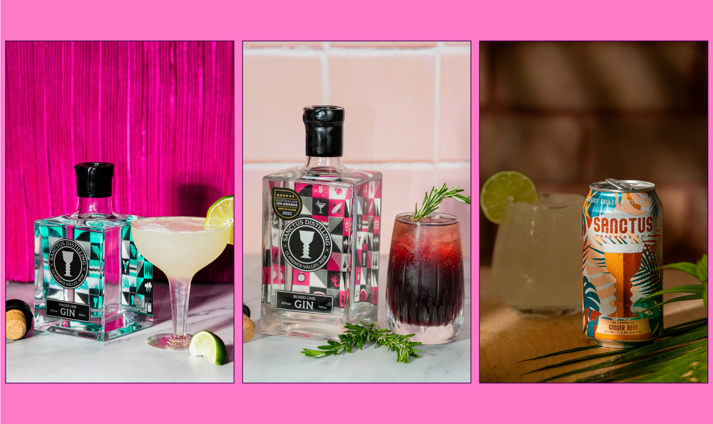

<!-- Modal 10-->
<div class="modal fade modal-xl" id="exampleModal16" tabindex="-1" aria-labelledby="exampleModalLabel" aria-hidden="true">
  <div class="modal-dialog">
    <div class="modal-content">
      <div class="modal-header">
        <button type="button" class="btn-close" data-bs-dismiss="modal" aria-label="Close"></button>
      </div>
      <div class="modal-body">

<div class=" row justify-content-center align-items-center" style="margin-bottom: 40px; margin-top: 40px;">
  <h2 class="text-center col-12 m-0 px-3 py-2" style="font-family:PPMonument; font-size: 48px; ">Sanctus</h2>
  <p class="text-center text-dark fs-6 fw-light font-family-Helvetica Neue col-12 m-0 px-3 py-2 pb-4">Social Media Content</p>
<br> <p style="padding-left: 10%; padding-right: 10%;">
  Craft Brewery Sanctus approached Pink Dog Studio to produce content for their Social Media accounts highlighting their range of products. We got to work creating reusable social media templates and some one-off photos and animations highlighting their range of products and upcoming events.
</p>
  
  
  


      </div>
      <div class="modal-footer">

      </div>
    </div>
  </div>
</div>
